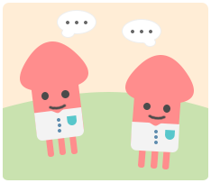

1500
尋找友誼
魚翔
登出
我的房間
換衣間
找朋友
揪團活動
虛擬商城
會員中心
客服機器人
通知
我的房間
換衣間
找朋友
揪團活動
尋找友誼
虛擬商城
會員中心
魚翔
登出
1500
平民
公頻
在你離線時共有 2 人 造訪你的房間
{{ message.chat_msg }}
{{ message.user_id }}
{{ message.user_id }}
{{ message.chat_msg }}
TO: {{chat_to_who}}
{{ message.chat_msg }}
{{ message.chat_msg }}
私訊
公開
在線好友({{online_friends().length}}/{{friends.length}})
{{ friend }}
({{ unread_messages_from_someone(friend).length }})
離線好友({{offline_friends().length}}/{{friends.length}})
{{ friend }}
好友邀請中
毛筆
開啟聊天室
收集友誼

線上魷魚，即時友誼
會員登入
暱稱
密碼
忘記密碼？